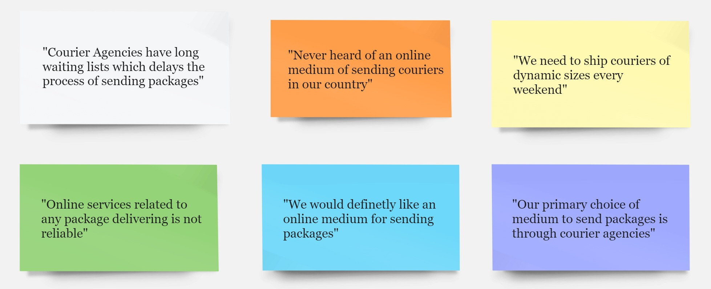
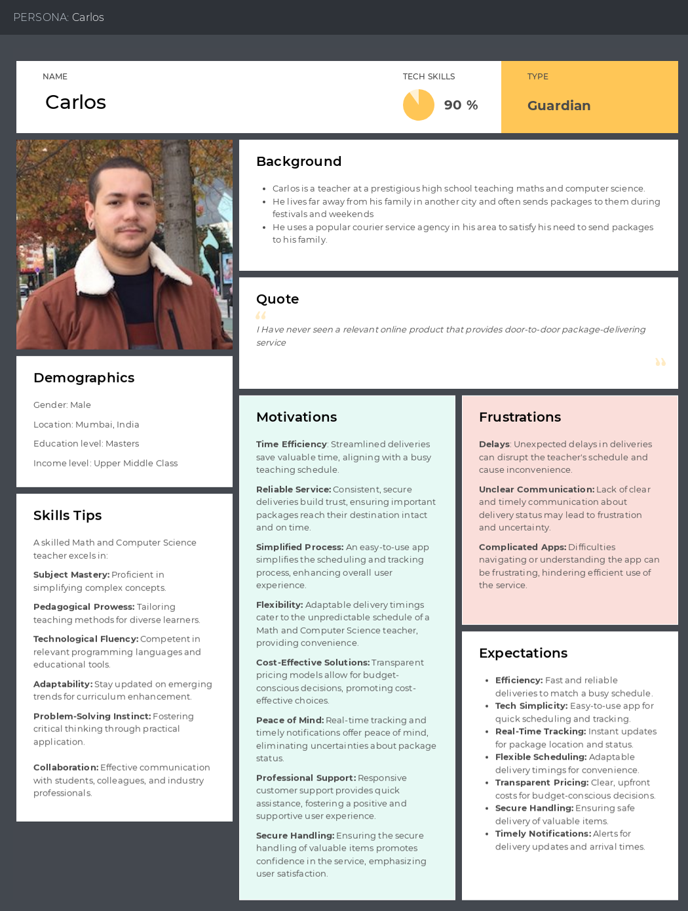
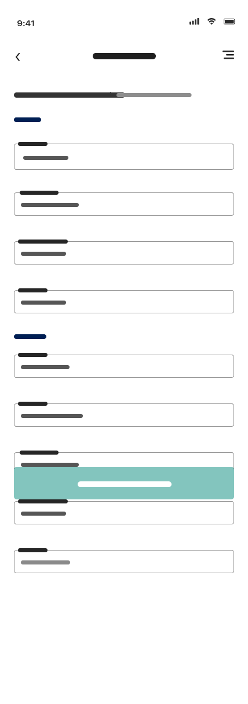
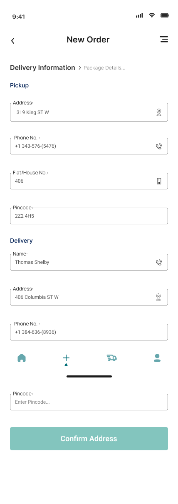
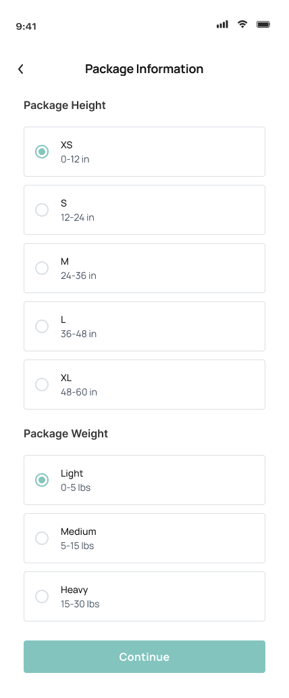
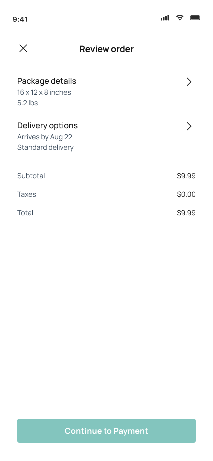
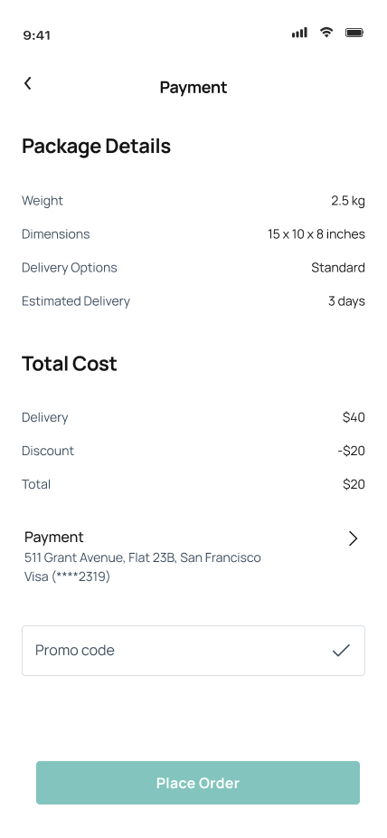

Send-It-Up
Door-to-door package delivery, designed for a market that mostly relied on courier agencies.
Role
UX design, user research, problem analysis, documentation, UI design
Timeline
1 week (2 days research, 5 days design & testing)
Tools
Overview
Sending a package across India usually meant physically going to a courier agency. Send-It-Up set out to replace that trip with a digital, door-to-door alternative — letting users book a pickup instead of carrying a package somewhere themselves.
Problem
The client's users defaulted to courier agencies out of habit, not preference. They needed a reliable digital medium they could trust for something as physical and logistics-heavy as package delivery.
Solution
Design a digital experience for users in India that provides door-to-door package delivery, because sending a package without a trusted medium is a bothersome, inefficient process.
Process
Interviews and surveys shaped the personas, which fed directly into wireframes and the final prototype.
- Interviews: 1:1 sessions on how people currently send packages, how often, and whether they'd trust a digital medium — even with an added fee.
- Surveys: A structured multiple-choice survey distributed to relevant communities, generating hundreds of responses and surfacing common pain points.
- Personas: Built and refined from interview and survey data to keep the design grounded in real user goals rather than assumptions.
- Wireframes → Prototype: Low-fidelity flows in Figma, refined into a high-fidelity prototype focused on a simple, efficient new-order flow.

-

Persona: Carlos -

Wireframe: New Order screen
UI direction
A light, simple visual style following the iOS style guide, optimized for mobile — prioritizing ease of navigation over visual complexity, in line with what the research showed users actually wanted.
-

New order -

Package information -

Review order -

Payment
Learnings
This project reinforced the value of designing for trust, not just usability — the biggest barrier wasn't the interface, it was convincing users a digital medium could replace something they'd always done in person. Keeping the UI simple and the onboarding low-friction was what made that trust possible.